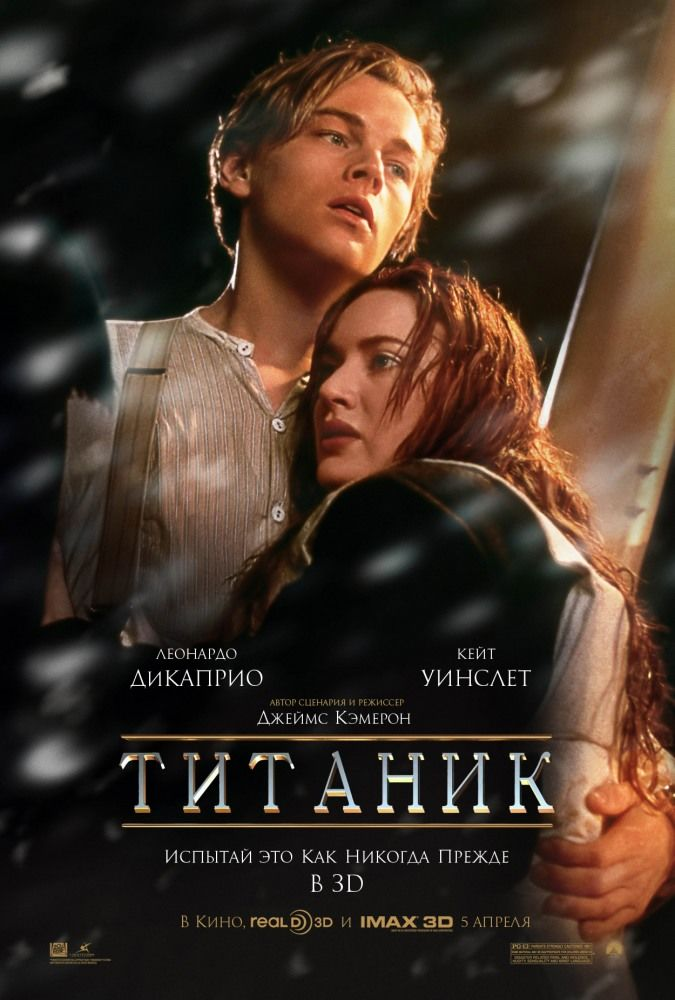

Гречко Анна Сергеевна
Моя почта: Asya.smayl.97@gmail.com
Проницательная Сдержанная Умная
Счастливая Грустная Сейчас


Определить свою цель – это как найти Полярную звезду. Она станет для вас ориентиром, если вы ненароком собьетесь с пути.
Маршалл Димок
Любимые фильмы:



Я учусь в Национальном Техническом Университете "Харьковский Политехнический Институт".
И это таблица моей успеваемости за 6 семестр:
| Моделирование систем | Потопальская К.Е. | 65 |
| Право | Семко M.A. | 72 | Математические методы | Иглин С.П. | 68 |
| Колебания механических систем | Трубаев A.И. | 69 |
| Украинский язык | Паршина Н.A. | 85 |
| Охрана труда | Кузьменко O.О. | 73 |
| БЖД | Кузьменко O.О. | 70 |
| Технологии создания программного продукта | Ларин A.A. | 61 |
| Компьютерные сети | Шелковый С.К. | 68 |
| Физическая культура | Натарова В.A. | 70 |